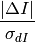
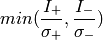
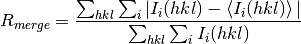

cctbx.miller package¶
cctbx.miller is one of the most important modules in CCTBX; it
encompasses nearly every operation performed directly on experimental data.
The core classes in cctbx.miller are the set and the
array. The set (not to be confused with the built-in
Python type) contains the crystal symmetry, an array (type
cctbx.array_family.flex.miller_index) of Miller indices (h,k,l),
and a boolean flag indicating anomalous pairs. It does not contain actual
data, although many of its methods will return an array. The array subclasses
the Miller set and adds a flex array containing data (and, optionally, a
flex array of experimental sigmas) and many extensions for supporting a variety
of data types. The underlying “data” is often X-ray amplitudes or intensities,
but many other array types are also supported.
One important distinction needs to be made for developers used to working with specific file formats or more archaic programming languages: the Miller arrays that you will work with do not necessarily correspond to a single column of data in a reflection file. There are several major differences:
- Friedel mates will be stored separate if present. This means that a
pair of columns
F(+)andF(-)from an MTZ file will become a single array with both(h,k,l)and(-h,-k,-l)present as distinct items. The same also applies to any other data type. (Note that one consequence of this behavior is that the number of reflections will appear to double-count acentric reflections for which both Friedel mates are present.) - For experimental data (amplitudes or intensities), the array will also
store the corresponding experimental sigmas;
array.data()returns the experimental data, whilearray.sigmas()returns sigmas. In combination with the treatment of anomalous data, this means that a single Miller array can represent the combination of columnsI(+),SIGI(+),I(-),SIGI(-)from a file. - Weighted map coefficients such as
FWT,DELFWTor2FOFCWT,PH2FOFCWTwill be treated as a single array with data typescitbx.array_family.flex.complex_double. - Hendrickson-Lattman phase probability coefficients are also grouped
together, and have their own data type
cctbx.array_family.flex.hendrickson_lattman.
These conventions greatly simplify keeping track of and manipulating related data items. Output to various file formats will still follow the appropriate conventions.
Getting started¶
Miller sets (and arrays) can be created in three ways: programatically, by
reading from a file, or from a cctbx.xray.structure object. (In
practice, the latter two options almost always return an array object rather
than a set.) Programmatic creation can be done directly, or through the
convenience method cctbx.miller.build_set():
>>> from cctbx import miller
>>> from cctbx import crystal
>>> ms = miller.build_set(
... crystal_symmetry=crystal.symmetry(
... space_group_symbol="P212121",
... unit_cell=(6,6,6,90,90,90)),
... anomalous_flag=False,
... d_min=3.0)
>>> print ms.size()
7
>>> print list(ms.indices())
[(0, 0, 2), (0, 1, 1), (0, 2, 0), (1, 0, 1), (1, 1, 0), (1, 1, 1), (2, 0, 0)]
>>> print ms.d_max_min()
(4.242640687119285, 3.0)
The same set, instantiated directly:
>>> from cctbx import miller
>>> from cctbx import crystal
>>> from cctbx.array_family import flex
>>> ms = miller.set(
... crystal_symmetry=crystal.symmetry(
... space_group_symbol="P212121",
... unit_cell=(6,6,6,90,90,90)),
... anomalous_flag=False,
... indices=flex.miller_index(
... [(0,0,2),(0,1,1),(0,2,0),(1,0,1),(1,1,0),(1,1,1),(2,0,0)]))
From here we can retrieve a variety of information, even before we have experimental data. For instance, exploring systematic absences (starting from the above example):
>>> from cctbx import sgtbx
>>> point_group = ms.space_group().build_derived_point_group()
>>> ms_base = ms.customized_copy(space_group=point_group)
>>> ms_all = ms_base.complete_set()
>>> print ms_all.size()
10
>>> sys_abs = ms_all.lone_set(other=ms_base)
>>> print type(sys_abs)
<class 'cctbx.miller.set'>
>>> print list(sys_abs.indices())
[(0, 0, 1), (0, 1, 0), (1, 0, 0)]
>>> ms_all_p212121 = ms_all.customized_copy(
... space_group_info=ms.space_group_info())
>>> sys_abs_flags = ms_all_p212121.sys_absent_flags()
>>> print type(sys_abs_flags)
<class 'cctbx.miller.array'>
>>> print list(sys_abs_flags.indices())
[(0, 0, 1), (0, 0, 2), (0, 1, 0), (0, 1, 1), (0, 2, 0), (1, 0, 0), (1, 0, 1), (1, 1, 0), (1, 1, 1), (2, 0, 0)]
>>> print list(sys_abs_flags.data())
[True, False, True, False, False, True, False, False, False, False]
>>> sys_abs = ms_all_p212121.select(sys_abs_flags.data())
>>> print list(sys_abs.indices())
[(0, 0, 1), (0, 1, 0), (1, 0, 0)]
>>> not_sys_abs = ms_all_p212121.select(~sys_abs_flags.data())
>>> print list(not_sys_abs.indices())
[(0, 0, 2), (0, 1, 1), (0, 2, 0), (1, 0, 1), (1, 1, 0), (1, 1, 1), (2, 0, 0)]
This block of code performed the following actions:
- change the symmetry to the point group (
P 2 2 2) corresponding to the original space group (P 21 21 21) - generate the complete list of reflections for the new set in
P 2 2 2 - obtain the “lone set” of reflections missing from the original set relative
to the new complete set; these correspond to reflections that are
systematically absent in
P 21 21 21(but notP 2 2 2) - change the symmetry for the complete set in
P 2 2 2back to the original space groupP 21 21 21 - call the method
sys_absent_flags()to obtain a Miller array whose data are aflex.boolarray indicating those reflections that are systematically absent - call the method
select()using the resulting boolean array and its inverse, first to extract the set of systematic absences forP 21 21 21, and then extract the non-absent set we started with
There are two more important details that are not immediately obvious from the code example:
1) customized_copy() will create a new set object, but it will not
copy any underlying flex arrays (the same applies to the array
class). This means that modifications to these arrays via the new copy will
be propagated back to the original object. If you want to avoid this
behavior, use the deep_copy() method:
>>> ms_base = ms.customized_copy(space_group=point_group).deep_copy()
2) The comparison of sets in lone_set(), and in general most other methods
that involve an other argument, will fail if the crystal symmetry is
not identical. For instance, in the above example, if we instead tried to
call lone_set() using the original P 21 21 21 set as other:
>>> sys_abs = ms_all.lone_set(other=ms)
Traceback (most recent call last):
File "<stdin>", line 1, in <module>
File "/home/nat/src/cctbx_project/cctbx/miller/__init__.py", line 1047, in lone_set
assert_is_similar_symmetry=assert_is_similar_symmetry).singles(1))
File "/Users/nat/src/cctbx_project/cctbx/miller/__init__.py", line 1007, in match_indices
assert self.is_similar_symmetry(other)
AssertionError
We can prevent this if we want:
>>> sys_abs = ms_all.lone_set(other=ms, assert_is_similar_symmetry=False)
However, you should use caution when disabling the symmetry check, as this
will also mean that comparisons between radically different crystal symmetries
(e.g. P 63 2 2 versus I 41) will be performed silently.
File I/O¶
Of course, if you are interested in working with actual experimental data,
additional APIs are required. Methods for reading input files are covered in
more detail in the documentation for iotbx.reflection_file_reader
and iotbx.file_reader, but in the simplest case we can obtain
experimental data in just a couple of lines of code:
>>> from iotbx.reflection_file_reader import any_reflection_file
>>> hkl_in = any_reflection_file(file_name="data.sca")
>>> miller_arrays = hkl_in.as_miller_arrays()
>>> i_obs = miller_arrays[0]
This of course assumes that the file format includes crystal symmetry, which
is not the case for some popular formats; in these cases you will need to
obtain the symmetry information separately and pass it to
as_miller_arrays().
Some of the file metadata will be preserved in the embedded array_info
object; other attributes are properties of the array itself:
>>> print i_obs.info()
data.sca:I(+),SIGI(+),I(-),SIGI(-)
>>> print i_obs.observation_type()
xray.intensity
>>> i_obs.show_summary()
Miller array info: data.sca:I(+),SIGI(+),I(-),SIGI(-)
Observation type: xray.intensity
Type of data: double, size=7
Type of sigmas: double, size=7
Number of Miller indices: 7
Anomalous flag: False
Unit cell: (6.000, 6.000, 6.000, 90, 90, 90)
Space group: P 21 21 21 (No. 19)
<cctbx.miller.array object at 0x1071a6690>
(The final line is simply printing the Python representation of the array
itself - this is because the show_summary() method returns a reference to
self, which allows chaining of successive methods.) Note that the
array_info object returned by array.info() contains the file name
and original column labels; elsewhere, these attributes are used to select
specific arrays from multi-purpose formats such as MTZ.
From here we can quickly convert to amplitudes:
>>> f_obs = i_obs.f_sq_as_f()
>>> print f_obs.observation_type()
xray.amplitude
(Note that for macromolecular data, the more sophisticated French-Wilson
treatment is recommended for dealing sensibly with weak or negative
intensities; this can be performed by calling array.french_wilson(). For
many purposes, however, the simpler and faster f_sq_as_f() will be
sufficient.)
The Miller array can also be easily output to CIF, MTZ, Scalepack (unmerged format only), SHELX, or CNS formats, although some restrictions apply. Some of these methods (where the format is limited to certain data types) can directly write to a file:
>>> i_obs.export_as_scalepack_unmerged(file_name="data2.sca")
>>> f = open("data.hkl", "w")
>>> i_obs.export_as_shelx_hklf(file_object=f)
>>> f.close()
Others require multiple steps, but this has the advantage of allowing multiple arrays to be combined (provided that they have identical crystal symmetry):
>>> mtz_dataset = i_obs.as_mtz_dataset(column_root_label="I")
>>> mtz_dataset.add_miller_array(f_obs, column_root_label="F")
>>> mtz_dataset.add_miller_array(r_free_flags,
... column_root_label="FreeR_flag")
>>> mtz_dataset.mtz_object().write("data.mtz")
In addition to conventional formats, since all of the internal types can be serialized as Python pickles, the same applies to set and array objects.
Processing input data - practical aspects¶
In practice, preparing input arrays for the various other algorithms in CCTBX
is often significantly more complicated than implied in the previous section.
Suppose for example we have an MTZ
file with these columns (output excerpted from phenix.mtz.dump data.mtz):
label #valid %valid min max type
H 75612 100.00% -40.00 38.00 H: index h,k,l
K 75612 100.00% 0.00 25.00 H: index h,k,l
L 75612 100.00% 0.00 70.00 H: index h,k,l
I(+) 74981 99.17% -11.10 2777.70 K: I(+) or I(-)
SIGI(+) 74981 99.17% 0.10 89.50 M: standard deviation
I(-) 69529 91.95% -14.00 2808.50 K: I(+) or I(-)
SIGI(-) 69529 91.95% 0.10 64.90 M: standard deviation
FreeR_flag 75773 100.00% 0.00 1.00 I: integer
We would eventually like to be able to use these data for calculation of R-factors (versus some hypothetical set of structure factors derived from a model or map). This requires several steps to ensure that any subsequent actions will behave sensibly: we must make sure that the input data are of the correct type, symmetry-unique, using conventional indices, and consistent with the R-free flags; we also want to use the R-free flags to separate out “working” and “test” arrays. To begin with, we read in the data:
>>> from iotbx.reflection_file_reader import any_reflection_file
>>> hkl_in = any_reflection_file(file_name="data.mtz")
>>> miller_arrays = hkl_in.as_miller_arrays()
>>> i_obs = miller_arrays[0]
>>> flags = miller_arrays[1]
>>> f_obs = i_obs.f_sq_as_f().map_to_asu()
>>> flags = flags.customized_copy(data=flags.data()==1).map_to_asu()
>>> f_obs = f_obs.merge_equivalents().array()
>>> flags = flags.merge_equivalents().array()
>>> flags_plus_minus = flags.generate_bijvoet_mates()
>>> f_obs, flags_plus_minus = f_obs.common_sets(other=flags_plus_minus)
>>> f_obs_work = f_obs.select(~flags_plus_minus.data())
>>> f_obs_free = f_obs.select(flags_plus_minus.data())
By the end of this block of code, we have ensured that the experimental
amplitudes and R-free flags have identically sized and ordered arrays, and
are suitable for comparison with any other (similarly prepared) set of data.
A number of consistency checks built in to the various set and array methods
may raise exceptions if these steps are skipped - for instance, the separate
storage of (h,k,l) and (-h,-k,-l) requires us to expand the R-free
flags to be “anomalous”, and if we skip that step:
>>> f_obs, flags = f_obs.common_sets(other=flags)
Traceback (most recent call last):
File "<stdin>", line 1, in <module>
File "/home/nat/src/cctbx_project/cctbx/miller/__init__.py", line 1032, in common_sets
assert_is_similar_symmetry=assert_is_similar_symmetry)
File "/home/nat/src/cctbx_project/cctbx/miller/__init__.py", line 1008, in match_indices
assert self.anomalous_flag() == other.anomalous_flag()
AssertionError
Or if we omit the call to common_sets():
>>> f_obs_work = f_obs.select(~flags_plus_minus.data())
Traceback (most recent call last):
File "<stdin>", line 1, in <module>
File "/home/nat/src/cctbx_project/cctbx/miller/__init__.py", line 3232, in select
i = self.indices().select(selection)
RuntimeError: scitbx Internal Error: /home/nat/src/cctbx_project/scitbx/array_family/selections.h(44): SCITBX_ASSERT(flags.size() == self.size()) failure.
(In practice, our use of common_sets() here is less than ideal; programs
in Phenix instead check that every reflection for which we have data also has
a corresponding R-free flag - after expansion to anomalous if necessary - and
exit with an error if this is not the case.)
Note that in the above example we are making many assumptions about the
contents and order of the input file, whereas in practice MTZ and CIF formats
may be arbitrarily complex and contain multiple arrays of each type.
(Additionally, the conventions for specifying R-free flags differ between
various software suites, and 1 will not necessarily be the appropriate
test flag value; fortunately, it is usually possible to guess the convention
being used.) For
actual applications (as opposed to quick scripts and development code),
the utilities available in iotbx.reflection_file_utils enable
standardized retrieval of different array types based on a combination of
automatic behavior and user input (i.e. label strings), and the general-purpose
input wrapper in mmtbx.command_line encapsulates nearly all of these
steps.
Comparing arrays¶
Here is a slightly more complex example of comparing data output by a refinement program. The input arrays are assumed to already be merged and in the same ASU, but normally this would be taken care of by previous routines.
def compute_r_factors (fobs, fmodel, flags) :
fmodel, fobs = fmodel.common_sets(other=fobs)
fmodel, flags = fmodel.common_sets(other=flags)
fc_work = fmodel.select(~(flags.data()))
fo_work = fobs.select(~(flags.data()))
fc_test = fmodel.select(flags.data())
fo_test = fobs.select(flags.data())
r_work = fo_work.r1_factor(fc_work)
r_free = fo_test.r1_factor(fc_test)
print "r_work = %.4f" % r_work
print "r_free = %.4f" % r_free
print ""
flags.setup_binner(n_bins=20)
fo_work.use_binning_of(flags)
fc_work.use_binner_of(fo_work)
fo_test.use_binning_of(fo_work)
fc_test.use_binning_of(fo_work)
for i_bin in fo_work.binner().range_all() :
sel_work = fo_work.binner().selection(i_bin)
sel_test = fo_test.binner().selection(i_bin)
fo_work_bin = fo_work.select(sel_work)
fc_work_bin = fc_work.select(sel_work)
fo_test_bin = fo_test.select(sel_test)
fc_test_bin = fc_test.select(sel_test)
if fc_test_bin.size() == 0 : continue
r_work_bin = fo_work_bin.r1_factor(other=fc_work_bin,
assume_index_matching=True)
r_free_bin = fo_test_bin.r1_factor(other=fc_test_bin,
assume_index_matching=True)
cc_work_bin = fo_work_bin.correlation(fc_work_bin).coefficient()
cc_free_bin = fo_test_bin.correlation(fc_test_bin).coefficient()
legend = flags.binner().bin_legend(i_bin, show_counts=False)
print "%s %8d %8d %.4f %.4f %.3f %.3f" % (legend, fo_work_bin.size(),
fo_test_bin.size(), r_work_bin, r_free_bin, cc_work_bin, cc_free_bin)
(The full source code is available in
iotbx/examples/recalculate_phenix_refine_r_factors.py.)
Working with experimental data¶
TODO
From arrays to maps¶
TODO
fft_map = map_coeffs.fft_map(resolution_factor=0.25)
fft_map.apply_sigma_scaling()
real_map = fft_map.real_map_unpadded()
site_map_values = flex.double()
for site in xray_structure.sites_frac() :
rho = real_map.eight_point_interpolation(site)
site_map_values.append(rho)
As an extreme example of the ease of scripting repetitive actions using
cctbx.miller, here is a complete six-line script to convert all sets of map
coefficients in an MTZ file to sigma-scaled CCP4-format map files (covering the
unit cell):
from iotbx.reflection_file_reader import any_reflection_file
hkl_in = any_reflection_file(file_name="map_coeffs.mtz")
for i_map, array in enumerate(hkl_in.as_miller_arrays()) :
if array.is_complex_array() :
fft_map = array.fft_map(resolution_factor=0.25).apply_sigma_scaling()
fft_map.as_ccp4_map(file_name="map_%d.ccp4" % (i_map+1))
See the documentation for cctbx.maptbx for details of working with
map objects.
The Miller set¶
-
class
cctbx.miller.set(crystal_symmetry, indices, anomalous_flag=None)¶ Bases:
cctbx.crystal.symmetryBasic class for handling sets of Miller indices (h,k,l), including sorting and matching functions, symmetry handling, generation of R-free flags, and extraction of associated statistics. Does not actually contain data, but this can be added using the array(...) method.
Methods
all_selection()amplitude_normalisations(asu_contents, ...)A miller.array whose data N(h) are the normalisations to convert anomalous_flag()Indicate whether the set or array is anomalous or not. array([data, sigmas])Create an array object, given data and/or sigma arrays of identical dimensions to the indices array. as_anomalous_set()Return a copy of the set using the same indices but with the anomalous flag set to true. as_cif_block([cell_covariance_matrix, ...])as_non_anomalous_set()Return a copy of the set using the same indices but with the anomalous flag set to false. as_pdb_remark_290()as_py_code([indent])as_reference_setting()asu_mappings(buffer_thickness[, ...])at_first_index(ary, miller_index)Returns the element ary coresponding to the miller_index if `miller_index exists, otherwise returns None. auto_anomalous([min_n_bijvoet_pairs, ...])Set the anomalous flag automatically depending on whether the data contain Bijvoet pairs (optionally given minimum cutoffs). average_b_cart(b_cart)average_u_cart(u_cart)best_cell([angular_tolerance])binner()Return a reference to the current resolution binner (or None if undefined). build_miller_set(anomalous_flag, d_min[, d_max])cell_equivalent_p1()centric_flags()Generate a boolean Miller array flagging centric reflections. change_basis(cb_op)Get a transformation of the miller set with a new basis specified by cb_op change_of_basis_op_to_best_cell([...])change_of_basis_op_to_inverse_hand()change_of_basis_op_to_minimum_cell()change_of_basis_op_to_niggli_cell([...])change_of_basis_op_to_primitive_setting()change_of_basis_op_to_reference_setting()clear_binner()common_set(other[, assert_is_similar_symmetry])Match the indices in the current set and another set, and return a set (or array) containing only those reflections present in both. common_sets(other[, ...])Like common_set(other), but returns a tuple containing matching copies of both sets (or arrays). complete_set([d_min_tolerance, d_min, ...])Generate the complete set of Miller indices expected for the current symmetry, excepting systematic absences. completeness([use_binning, d_min_tolerance, ...])Calculate the (fractional) completeness of the array relative to the theoretical complete set, either overall or in resolution bins. concatenate(other[, assert_is_similar_symmetry])Combine two Miller sets. copy()Create a copy of the set, keeping references to the same crystal symmetry and indices. crystal_gridding([resolution_factor, d_min, ...])Calculate real-space grid for FFT given array crystal symmetry, d_min, and desired resolution-dependent spacing. crystal_symmetry()Get crystal symmetry of the miller set customized_copy([crystal_symmetry, indices, ...])Create a copy of the set, optionally changing the symmetry, indices, and/or anomalous flag (default = keep all unmodified). d_max_min()Low- and high-resolution limits. d_min()High-resolution limit. d_min_along_a_b_c_star()Returns the effective resolution limits along the reciprocal space axes. d_spacings()Generate a double Miller array containing the resolution d of each index. d_star_cubed()d_star_sq()debye_waller_factors([u_iso, b_iso, u_cart, ...])Given an isotropic or anisotropic displacement or B-factor, alculate resolution-dependent scale factors corresponding to the indices. deep_copy()Create a copy of the set, also copying the crystal symmetry and indices. delete_index(hkl)Remove all reflections with the specified Miller index. delete_indices(other)Delete multiple reflections, as specified by the Miller indices of another set. direct_space_asu()epsilons()expand_to_p1([return_iselection])Get a transformation of the miller set to spacegroup P1 expand_to_p1_iselection([build_iselection])f_obs_minus_xray_structure_f_calc(...[, ...])first_index(miller_index)Returns the first index of the item matching miller_index. generate_r_free_flags([fraction, max_free, ...])Create an array of R-free flags for the current set, keeping anomalous pairs together. generate_r_free_flags_basic([fraction, ...])Generate R-free flags, without taking lattice symmetry into account (not recommended). generate_r_free_flags_on_lattice_symmetry([...])Generate R-free flags by converting to the highest possible lattice symmetry (regardless of intensity symmetry), creating flags, and expanding back to the original symmetry. gridding([d_min, resolution_factor, step, ...])index_span()indices()Return a reference to the internal array of indices. inverse_hand()is_compatible_unit_cell()is_empty()is_in_asu()Indicate whether the array is entirely contained within the reciprocal space asymmetric unit (ASU). is_nonsence()is_patterson_symmetry()is_similar_symmetry(other[, ...])is_unique_set_under_symmetry()Determine whether the indices in the set are symmetry-unique. join_symmetry(other_symmetry[, force, ...])log_binning([...])Create resolution bins on a logarithmic scale. lone_set(other[, assert_is_similar_symmetry])Match the indices in the current set and another set, and return a set (or array) containing reflections which are present only in the current set. lone_sets(other[, assert_is_similar_symmetry])Like lone_set(other), but returns a tuple containing the reflections unique to each set (or array). map_to_asu()Convert all indices to lie within the canonical asymmetric unit for the current space group (while preserving anomalous flag). match_bijvoet_mates([...])Group Bijvoet mates (or Friedel mates) together, returning an object that allows enumeration over matching pairs and/or singletons. match_indices(other[, ...])miller_indices_as_pdb_file([file_name, ...])Write out Miller indices as pseudo-waters for visualization. miller_set(indices, anomalous_flag)min_max_d_star_sq()min_max_indices()Return the range of h,k,l indices minimum_cell()minimum_wavelength_based_on_d_min([tolerance])multiplicities()Generate a Miller array (with integer data) indicating the multiplicity of each unique reflection. n_bijvoet_pairs()Return the number of Bijvoet pairs. niggli_cell([relative_epsilon, iteration_limit])patterson_symmetry()primitive_setting()random_phases_compatible_with_phase_restrictions([deg])reflection_intensity_symmetry()remove_systematic_absences([negate])resolution_filter([d_max, d_min, negate])Select a subset within the indicated resolution range. resolution_filter_selection([d_max, d_min])Obtain the selection (flex.bool array) corresponding to the specified resolution range. resolution_range()Synonym for d_max_min(). select(selection[, negate, anomalous_flag])Select a subset of reflections. select_acentric()Select only acentric reflections. select_centric()Select only centric reflections. setup_binner([d_max, d_min, auto_binning, ...])Create internal resolution binner object; required for many other methods to work. setup_binner_counting_sorted([d_max, d_min, ...])setup_binner_d_star_sq_step([auto_binning, ...])show_completeness([reflections_per_bin, out])Display the completeness in resolution bins. show_comprehensive_summary([f, prefix])Display comprehensive Miller set or array summary show_summary([f, prefix])Minimal Miller set summary sin_theta_over_lambda_sq()size()Return the number of reflections in the set or array. slice([axis, axis_index, slice_index, ...])sort([by_value, reverse])Reorder reflections by resolution or Miller index. sort_permutation([by_value, reverse])Generate the selection array (flex.size_t object) to reorder the array by resolution or Miller index. space_group()space_group_info()special_position_settings([...])structure_factors_from_asu_map(asu_map_data, ...)structure_factors_from_map(map[, ...])Run FFT on a real-space map to calculate structure factors corresponding to the current set of Miller indices. structure_factors_from_scatterers(xray_structure)Calculate structure factors for an cctbx.xray.structureobject corresponding to the current set of Miller indices.subtract_continuous_allowed_origin_shifts(...)sys_absent_flags([integral_only])Generate a boolean Miller array flagging those reflections which are systematically absent under the current symmetry. two_theta(wavelength[, deg])Generate a double Miller array containing the scattering angle of each index. unique_under_symmetry()unique_under_symmetry_selection()unit_cell()use_binner_of(other)Use the exact binner of another set, which must have identical indices. use_binning(binning)Use the resolution binning of the specified binner object (does not need to be from an identically sized set). use_binning_of(other)Use the resolution binning of the specified set (does not need to be an identical set of indices). -
all_selection()¶
-
amplitude_normalisations(asu_contents, wilson_plot)¶ A miller.array whose data N(h) are the normalisations to convert between E’s and F’s: E(h) = F(h) / N(h) The argument wilson_plot shall feature attributes - wilson_intensity_scale_factor - wilson_b
-
anomalous_flag()¶ Indicate whether the set or array is anomalous or not.
-
array(data=None, sigmas=None)¶ Create an array object, given data and/or sigma arrays of identical dimensions to the indices array.
Parameters: - data – a flex array (any format) or None
- sigmas – a flex array (any format, but almost always double) or None
-
as_anomalous_set()¶ Return a copy of the set using the same indices but with the anomalous flag set to true.
-
as_non_anomalous_set()¶ Return a copy of the set using the same indices but with the anomalous flag set to false.
-
at_first_index(ary, miller_index)¶ Returns the element ary coresponding to the miller_index if `miller_index exists, otherwise returns None.
Parameters: - miller_index (tuple) – Miller index as a 3-tuple
- ary (sequence (list, array, etc)) – any array (e.g. self.data(), self.sigmas())
Returns: type of contents of ary, or None
-
auto_anomalous(min_n_bijvoet_pairs=None, min_fraction_bijvoet_pairs=None)¶ Set the anomalous flag automatically depending on whether the data contain Bijvoet pairs (optionally given minimum cutoffs).
Returns: a copy of the set with (maybe) a new anomalous flag
-
binner()¶ Return a reference to the current resolution binner (or None if undefined).
-
centric_flags()¶ Generate a boolean Miller array flagging centric reflections.
-
change_basis(cb_op)¶ Get a transformation of the miller set with a new basis specified by cb_op
Parameters: cb_op (string or sgtbx.change_of_basis_operator) – object describing the desired transformation of the basis Returns: a new miller set with the new basis Return type: cctbx.miller.set
-
clear_binner()¶
-
common_set(other, assert_is_similar_symmetry=True)¶ Match the indices in the current set and another set, and return a set (or array) containing only those reflections present in both. Assumes that both sets are already in the asymmetric unit (ASU).
-
common_sets(other, assert_is_similar_symmetry=True, assert_no_singles=False)¶ Like common_set(other), but returns a tuple containing matching copies of both sets (or arrays).
-
complete_set(d_min_tolerance=1e-06, d_min=None, d_max=None, max_index=None)¶ Generate the complete set of Miller indices expected for the current symmetry, excepting systematic absences.
Parameters: - d_min_tolerance – tolerance factor for d_min (avoid precision errors)
- d_min – High-resolution limit (default = d_min of current set)
- d_max – Low-resolution limit (default = d_max of current set)
-
completeness(use_binning=False, d_min_tolerance=1e-06, return_fail=None, d_max=None, multiplier=1, as_non_anomalous_array=None)¶ Calculate the (fractional) completeness of the array relative to the theoretical complete set, either overall or in resolution bins. By default the current low-resolution limit will be used.
Parameters: - d_min_tolerance – tolerance factor for d_min (avoid precision errors)
- d_max – Low-resolution limit (default = d_max of current set)
- multiplier – Factor to multiply the result by (usually 1 or 100)
- as_non_anomalous_array – Report values for non-anomalous array
-
concatenate(other, assert_is_similar_symmetry=True)¶ Combine two Miller sets. Both must have the same anomalous flag, and similar symmetry is also assumed.
-
copy()¶ Create a copy of the set, keeping references to the same crystal symmetry and indices.
-
crystal_gridding(resolution_factor=0.3333333333333333, d_min=None, grid_step=None, symmetry_flags=None, mandatory_factors=None, max_prime=5, assert_shannon_sampling=True)¶ Calculate real-space grid for FFT given array crystal symmetry, d_min, and desired resolution-dependent spacing. The actual grid dimensions will be adjusted to suit the needs of the FFT algorithm.
-
crystal_symmetry()¶ Get crystal symmetry of the miller set
Returns: a new crystal.symmetry object Return type: cctbx.crystal.symmetry
-
customized_copy(crystal_symmetry=Keep, indices=Keep, anomalous_flag=Keep, unit_cell=Keep, space_group_info=Keep)¶ Create a copy of the set, optionally changing the symmetry, indices, and/or anomalous flag (default = keep all unmodified).
-
d_max_min()¶ Low- and high-resolution limits. :returns: Python tuple of floats
-
d_min()¶ High-resolution limit. :returns: Python float
-
d_min_along_a_b_c_star()¶ Returns the effective resolution limits along the reciprocal space axes.
-
d_spacings()¶ Generate a double Miller array containing the resolution d of each index.
-
d_star_cubed()¶
-
d_star_sq()¶
-
debye_waller_factors(u_iso=None, b_iso=None, u_cart=None, b_cart=None, u_cif=None, u_star=None, exp_arg_limit=50, truncate_exp_arg=False)¶ Given an isotropic or anisotropic displacement or B-factor, alculate resolution-dependent scale factors corresponding to the indices. (Note that to simply apply one of the input parameters to an existing Miller array, you can call array.apply_debye_waller_factors)
Parameters: - u_iso – Isotropic displacement (in Angstroms)
- b_iso – Isotropic B-factor (8*pi^2*u_iso^2)
- u_cart – Anisotropic displacement tensor
- b_cart – Anisotropic B-factor
- u_star – Anisotropic displacement tensor in fractional space
- u_cif – Anisotropic displacement tensor, dimensionless basis
Returns: cctbx.miller.array object
-
deep_copy()¶ Create a copy of the set, also copying the crystal symmetry and indices.
Returns: a set object with all-new attributes.
-
delete_index(hkl)¶ Remove all reflections with the specified Miller index.
-
delete_indices(other)¶ Delete multiple reflections, as specified by the Miller indices of another set.
-
epsilons()¶
-
expand_to_p1(return_iselection=False)¶ Get a transformation of the miller set to spacegroup P1
Returns: a new set of parameters (symmetry, miller indices, anomalous_flag) in spacegroup P1 Return type: set(cctbx.crystal.symmetry, cctbx.miller.indices, boolean)
-
expand_to_p1_iselection(build_iselection=True)¶
-
f_obs_minus_xray_structure_f_calc(f_obs_factor, xray_structure, structure_factor_algorithm=None, cos_sin_table=False, quality_factor=None, u_base=None, b_base=None, wing_cutoff=None, exp_table_one_over_step_size=None)¶
-
first_index(miller_index)¶ Returns the first index of the item matching miller_index. If the miller_index is not found in self, then returns
None.Parameters: miller_index (tuple) – Miller index as a 3-tuple Returns: int, None – index of first occurrence of miller_index or None
-
generate_r_free_flags(fraction=0.1, max_free=2000, lattice_symmetry_max_delta=5.0, use_lattice_symmetry=True, use_dataman_shells=False, n_shells=20, format='cns')¶ Create an array of R-free flags for the current set, keeping anomalous pairs together. Requires that the set already be unique under symmetry, and generally assumes that the set is in the ASU.
Parameters: - fraction – fraction of reflections to flag for the test set
- max_free – limit on size of test set, overrides fraction
- lattice_symmetry_max_delta – limit on lattice symmetry calculation
- use_lattice_symmetry – given the current symmetry, determine the highest possible lattice symmetry and generate flags for that symmetry, then expand to the current (lower) symmetry if necessary. This is almost always a good idea.
- use_dataman_shells – generate flags in thin resolution shells to avoid bias due to non-crystallographic symmetry.
- n_shells – number of resolution shells if use_dataman_shells=True
- format – convention of the resulting flags. ‘cns’ will return a boolean array (True = free), ‘ccp4’ will return an integer array from 0 to X (0 = free, X dependent on fraction), ‘shelx’ will return an integer array with values 1 (work) or -1 (free).
Returns: a boolean or integer Miller array, depending on format.
-
generate_r_free_flags_basic(fraction=0.1, max_free=2000, use_dataman_shells=False, n_shells=20, format='cns')¶ Generate R-free flags, without taking lattice symmetry into account (not recommended). Should not normally be called directly - use generate_r_free_flags(...) instead.
-
generate_r_free_flags_on_lattice_symmetry(fraction=0.1, max_free=2000, max_delta=5.0, return_integer_array=False, n_partitions=None, use_dataman_shells=False, n_shells=20, format='cns')¶ Generate R-free flags by converting to the highest possible lattice symmetry (regardless of intensity symmetry), creating flags, and expanding back to the original symmetry. This is a safeguard against reflections that are correlated due to twinning being split between the work and test sets.
This method should usually not be called directly, but rather through set.generate_r_free_flags(...).
-
index_span()¶
-
indices()¶ Return a reference to the internal array of indices.
Returns: a cctbx.array_family.flex.miller_index array
-
is_in_asu()¶ Indicate whether the array is entirely contained within the reciprocal space asymmetric unit (ASU). Warning: this calls map_to_asu internally, so it is better to simply call map_to_asu without checking in many cases.
-
is_unique_set_under_symmetry()¶ Determine whether the indices in the set are symmetry-unique.
-
log_binning(n_reflections_in_lowest_resolution_bin=100, eps=0.0001, max_number_of_bins=30, min_reflections_in_bin=50)¶ Create resolution bins on a logarithmic scale. See Urzhumtsev et al. (2009) Acta Crystallogr D Biol Crystallogr. 65:1283-91.
-
lone_set(other, assert_is_similar_symmetry=True)¶ Match the indices in the current set and another set, and return a set (or array) containing reflections which are present only in the current set. Assumes that both sets are already in the asymmetric unit.
-
lone_sets(other, assert_is_similar_symmetry=True)¶ Like lone_set(other), but returns a tuple containing the reflections unique to each set (or array).
-
map_to_asu()¶ Convert all indices to lie within the canonical asymmetric unit for the current space group (while preserving anomalous flag). Required for many downstream steps.
-
match_bijvoet_mates(assert_is_unique_set_under_symmetry=True)¶ Group Bijvoet mates (or Friedel mates) together, returning an object that allows enumeration over matching pairs and/or singletons.
-
match_indices(other, assert_is_similar_symmetry=True)¶
-
miller_indices_as_pdb_file(file_name=None, expand_to_p1=False)¶ Write out Miller indices as pseudo-waters for visualization. Note that this treats the indices as literal coordinates (times a scale factor), and the distances between points will not correspond to the distances in reciprocal space.
See cctbx/miller/display.py and crys3d/hklview for an alternative (but less lightweight) approach.
-
min_max_d_star_sq()¶
-
min_max_indices()¶ Return the range of h,k,l indices
-
minimum_wavelength_based_on_d_min(tolerance=0.01)¶
-
multiplicities()¶ Generate a Miller array (with integer data) indicating the multiplicity of each unique reflection. (If the set or array is already symmetry-unique, the multiplicity will be 1 for every reflection.)
Returns: array object with flex.int data
-
n_bijvoet_pairs()¶ Return the number of Bijvoet pairs.
-
patterson_symmetry()¶
-
random_phases_compatible_with_phase_restrictions(deg=False)¶
-
reflection_intensity_symmetry()¶
-
remove_systematic_absences(negate=False)¶
-
resolution_filter(d_max=0, d_min=0, negate=0)¶ Select a subset within the indicated resolution range.
Parameters: - d_max – Low-resolution cutoff
- d_min – High-resolution cutoff
- negate – Select outside this range instead
Returns: set or array depending on object type
-
resolution_filter_selection(d_max=None, d_min=None)¶ Obtain the selection (flex.bool array) corresponding to the specified resolution range.
-
resolution_range()¶ Synonym for d_max_min().
-
select(selection, negate=False, anomalous_flag=None)¶ Select a subset of reflections.
Parameters: - selection – flex.bool or flex.size_t selection
- negate – select the inverse of the selection array
- anomalous_flag – anomalous flag for the new set
Returns: a new set with a subset of indices
-
select_acentric()¶ Select only acentric reflections.
Returns: A Miller set or array (depending on object type).
-
select_centric()¶ Select only centric reflections.
Returns: A Miller set or array (depending on object type).
-
setup_binner(d_max=0, d_min=0, auto_binning=False, reflections_per_bin=0, n_bins=0)¶ Create internal resolution binner object; required for many other methods to work.
-
setup_binner_counting_sorted(d_max=0, d_min=0, reflections_per_bin=None, n_bins=None, d_tolerance=1e-10)¶
-
setup_binner_d_star_sq_step(auto_binning=True, d_max=None, d_min=None, d_star_sq_step=None)¶
-
show_completeness(reflections_per_bin=500, out=None)¶ Display the completeness in resolution bins.
-
show_comprehensive_summary(f=None, prefix='')¶ Display comprehensive Miller set or array summary
-
show_summary(f=None, prefix='')¶ Minimal Miller set summary
-
sin_theta_over_lambda_sq()¶
-
size()¶ Return the number of reflections in the set or array.
-
slice(axis=None, axis_index=None, slice_index=None, slice_start=None, slice_end=None)¶
-
sort(by_value='resolution', reverse=False)¶ Reorder reflections by resolution or Miller index.
Parameters: by_value – ‘resolution’ or ‘packed_indices’
-
sort_permutation(by_value='resolution', reverse=False)¶ Generate the selection array (flex.size_t object) to reorder the array by resolution or Miller index.
Parameters: - by_value – sort type, must be “resolution” or “packed_indices”
- reverse – invert order
Returns: flex.size_t object
-
structure_factors_from_asu_map(asu_map_data, n_real)¶
-
structure_factors_from_map(map, in_place_fft=False, use_scale=False, anomalous_flag=None, use_sg=False)¶ Run FFT on a real-space map to calculate structure factors corresponding to the current set of Miller indices.
Parameters: - map – flex.double map with 3D flex.grid accessor
- in_place_fft – perform the FFT in place instead of creating a copy of the map first
- use_scale – perform volume-scaling using current unit cell
- anomalous_flag – determines anomalous_flag for output array
- use_sg – use space-group symmetry
Returns: array with same Miller indices and complex_double data
-
structure_factors_from_scatterers(xray_structure, algorithm=None, cos_sin_table=False, grid_resolution_factor=0.3333333333333333, quality_factor=None, u_base=None, b_base=None, wing_cutoff=None, exp_table_one_over_step_size=None)¶ Calculate structure factors for an
cctbx.xray.structureobject corresponding to the current set of Miller indices. Can use either FFT or direct summation.Parameters: - xray_structure –
cctbx.xray.structureobject - algorithm – switch method to calculate structure factors - can be ‘direct’ or ‘fft’
Returns: array with same Miller indices and complex_double data
- xray_structure –
-
sys_absent_flags(integral_only=False)¶ Generate a boolean Miller array flagging those reflections which are systematically absent under the current symmetry.
-
two_theta(wavelength, deg=False)¶ Generate a double Miller array containing the scattering angle of each index.
-
unique_under_symmetry()¶
-
unique_under_symmetry_selection()¶
-
use_binner_of(other)¶ Use the exact binner of another set, which must have identical indices.
-
use_binning(binning)¶ Use the resolution binning of the specified binner object (does not need to be from an identically sized set).
-
use_binning_of(other)¶ Use the resolution binning of the specified set (does not need to be an identical set of indices).
-
-
cctbx.miller.build_set(crystal_symmetry, anomalous_flag, d_min=None, d_max=None, max_index=None)¶ Given crystal symmetry, anomalous flag, and resolution limits, create a complete set object.
Parameters: - crystal_symmetry – cctbx.crystal.symmetry object
- anomalous_flag – Boolean, indicates whether to generate anomalous indices
- d_min – High-resolution limit (optional if max_index is specified)
- d_max – Low-resolution limit (optional)
- max_index – highest-resolution Miller index
Returns: a set object
The Miller array¶
-
class
cctbx.miller.array(miller_set, data=None, sigmas=None)¶ Bases:
cctbx.miller.setExtension of the set class with addition of data and (optional) sigmas flex arrays, plus an optional array_info object and an optional flag for the observation type (amplitude, intensity, or reconstructed amplitude).
Methods
adopt_set(other[, assert_is_similar_symmetry])all_selection()amplitude_normalisations(asu_contents[, ...])Overriden version of set.amplitude_normalisation which computes the Wilson parameters from the array data if wilson_plot is None. amplitude_quasi_normalisations([d_star_power])A miller.array whose data N(h) are the normalisations to convert amplitudes()For a complex array, return array of absolute values. analyze_intensity_statistics([d_min, ...])Detect translational pseudosymmetry and twinning, using methods in Xtriage. anomalous_completeness([use_binning, ...])Return the percent of acentric reflections with both h,k,l and -h,-k,-l observed (only meaningful for amplitude and intensity arrays). anomalous_differences([enforce_positive_sigmas])Returns an array object with DANO (i.e. anomalous_flag()Indicate whether the set or array is anomalous or not. anomalous_signal([use_binning])Get the anomalous signal according to this formula: apply_change_of_basis(change_of_basis[, ...])Encapsulates a variety of reindexing operations, including handling for a variety of corner cases. apply_debye_waller_factors([u_iso, b_iso, ...])Given an isotropic or anisotropic displacement or B-factor, apply resolution-dependent scale factors to the data (and optionally sigmas). apply_scaling([target_max, factor])Apply a scale factor to the data (and optionally sigmas). apply_shelxl_extinction_correction(x, wavelength)arg([deg])array([data, sigmas])Create an array object, given data and/or sigma arrays of identical dimensions to the indices array. as_amplitude_array([algorithm])Convert the array to simple amplitudes if not already in that format. as_anomalous_array()Return a copy of the array with identical contents (keeping original flex arrays) but with the anomalous flag set to true. as_anomalous_set()Return a copy of the set using the same indices but with the anomalous flag set to true. as_cif_block(array_type)as_cif_simple(array_type[, out, data_name])as_double()Create a copy of the array with the data converted to a flex.double type. as_intensity_array([algorithm])Convert the array to intensities if not already in that format. as_mtz_dataset(column_root_label[, ...])Generate an iotbx.mtz.dataset object for the array, which can be extended with additional arrays and eventually written to an MTZ file. as_non_anomalous_array()Return a copy of the array with identical contents (keeping original flex arrays) but with the anomalous flag set to false. as_non_anomalous_set()Return a copy of the set using the same indices but with the anomalous flag set to false. as_pdb_remark_290()as_phases_phs(out[, scale_amplitudes, ...])Write phases to .phs file. as_py_code([indent])as_reference_setting()as_xray_observations([scale_indices, ...])asu_mappings(buffer_thickness[, ...])at_first_index(ary, miller_index)Returns the element ary coresponding to the miller_index if `miller_index exists, otherwise returns None. auto_anomalous([min_n_bijvoet_pairs, ...])Set the anomalous flag automatically depending on whether the data contain Bijvoet pairs (optionally given minimum cutoffs). average_b_cart(b_cart)average_bijvoet_mates()Given an anomalous array, merge the anomalous pairs and return the non-anomalous average. average_u_cart(u_cart)best_cell([angular_tolerance])bijvoet_ratios([obs_type, measurable_only, ...])binner()Return a reference to the current resolution binner (or None if undefined). build_miller_set(anomalous_flag, d_min[, d_max])cc_anom(\*args, \*\*kwds)Alias for array.half_dataset_anomalous_correlation() cc_one_half([use_binning, n_trials, ...])Calculate the correlation between two randomly assigned pools of unmerged data (“CC 1/2”). cc_one_half_sigma_tau([use_binning, ...])Calculation of CC1/2 by the ‘sigma-tau’ method, avoiding the random assignment into half-datasets of the above method. cell_equivalent_p1()centric_flags()Generate a boolean Miller array flagging centric reflections. change_basis(cb_op[, deg])change_of_basis_op_to_best_cell([...])change_of_basis_op_to_inverse_hand()change_of_basis_op_to_minimum_cell()change_of_basis_op_to_niggli_cell([...])change_of_basis_op_to_primitive_setting()change_of_basis_op_to_reference_setting()change_symmetry([space_group_symbol, ...])Encapsulates all operations required to convert the original data to a different symmetry (e.g. clear_binner()combine(other[, scale, scale_for_lones])common_set(other[, assert_is_similar_symmetry])Match the indices in the current set and another set, and return a set (or array) containing only those reflections present in both. common_sets(other[, ...])Like common_set(other), but returns a tuple containing matching copies of both sets (or arrays). complete_array([d_min_tolerance, d_min, ...])complete_set([d_min_tolerance, d_min, ...])Generate the complete set of Miller indices expected for the current symmetry, excepting systematic absences. complete_with(other[, scale, replace_phases])complete_with_bin_average([reflections_per_bin])completeness([use_binning, d_min_tolerance, ...])Calculate the (fractional) completeness of the array relative to the theoretical complete set, either overall or in resolution bins. concatenate(other[, assert_is_similar_symmetry])conjugate()convert_to_non_anomalous_if_ratio_pairs_lone_less_than(...)Convert anomalous array into nonanomalous if the number of Bijvoet pairs is too small compared to the number of lone Bijvoet mates. copy()Create a new array object using references to internal objects. correlation(other[, use_binning, ...])Calculate correlation coefficient between two arrays (either globally or binned). count_and_fraction_in_bins(data_value_to_count)crystal_gridding([resolution_factor, d_min, ...])Calculate real-space grid for FFT given array crystal symmetry, d_min, and desired resolution-dependent spacing. crystal_symmetry()Get crystal symmetry of the miller set crystal_symmetry_is_compatible_with_symmetry_from_file([...])customized_copy([miller_set, data, sigmas, ...])d_max_min()Low- and high-resolution limits. d_min()High-resolution limit. d_min_along_a_b_c_star()Returns the effective resolution limits along the reciprocal space axes. d_min_from_fsc([other, fsc_curve, ...])Compute Fourier Shell Correlation (FSC) and derive resolution based on specified cutoff. d_spacings()Generate a double Miller array containing the resolution d of each index. d_star_cubed()d_star_sq()data()data_at_first_index(miller_index)Returns the value of data of the first index matching miller_index. debye_waller_factors([u_iso, b_iso, u_cart, ...])Given an isotropic or anisotropic displacement or B-factor, alculate resolution-dependent scale factors corresponding to the indices. deep_copy()Clone the array, making copies of all internal array objects. delete_index(hkl)Remove all reflections with the specified Miller index. delete_indices(other)Delete multiple reflections, as specified by the Miller indices of another set. detwin_data(twin_law, alpha)Detwin data using a known twin fraction, returning an array with the same original data type. direct_space_asu()direct_summation_at_point(site_frac[, sigma])Calculates the exact map value at the specified fractional coordinate using direct Fourier summation. disagreeable_reflections(f_calc_sq[, ...])discard_sigmas()Create a copy of the array without sigmas. double_step_filtration([complete_set, ...])eliminate_sys_absent([integral_only, log, ...])Remove all reflections which should be systematically absent in the current space group. ellipsoidal_resolutions_and_indices_by_sigma([...])ellipsoidal_truncation_by_sigma([sigma_cutoff])enforce_positive_amplitudes([i_sig_level])Takes in an intensity array (including negatives) and spits out amplitudes. enforce_positive_sigmas()epsilons()expand_to_p1([phase_deg, return_iselection])Generate the equivalent P1 dataset. expand_to_p1_iselection([build_iselection])export_as_cns_hkl(file_object[, file_name, ...])Write reflections to a CNS-format file. export_as_scalepack_unmerged([file_object, ...])Write data in unmerged scalepack format. export_as_shelx_hklf([file_object, ...])Write reflections to a SHELX-format .hkl file. f_as_f_sq([algorithm])Convert amplitudes (and associated sigmas, if present) to intensities. f_obs_f_calc_fan_outlier_selection(f_calc[, ...])Preconditions (not checked explicitly): self is amplitude array, f_calc is complex array or amplitude array. f_obs_minus_f_calc(f_obs_factor, f_calc)f_obs_minus_xray_structure_f_calc(...[, ...])f_sq_as_f([algorithm, tolerance])Given an intensity/F^2 array (or undefined observation type), return the equivalent amplitudes. fft_map([resolution_factor, d_min, ...])Calculate the FFT for the array, assuming the data are complex doubles. first_index(miller_index)Returns the first index of the item matching miller_index. french_wilson(\*\*kwds)Perform French-Wilson treatment of X-ray intensities to estimate the “true” intensities, replacing very weak and/or negative values, and takes the square root to obtain amplitudes. from_cif([file_object, file_path, ...])Class method for building an array from a CIF file (or filehandle). fsc(other[, bin_width])Compute Fourier Shell Correlation (FSC) generate_bijvoet_mates()If the array is not already anomalous, expand to generate anomalous pairs (without changing data). generate_r_free_flags([fraction, max_free, ...])Create an array of R-free flags for the current set, keeping anomalous pairs together. generate_r_free_flags_basic([fraction, ...])Generate R-free flags, without taking lattice symmetry into account (not recommended). generate_r_free_flags_on_lattice_symmetry([...])Generate R-free flags by converting to the highest possible lattice symmetry (regardless of intensity symmetry), creating flags, and expanding back to the original symmetry. gridding([d_min, resolution_factor, step, ...])half_dataset_anomalous_correlation([...])Calculate the correlation of the anomalous differences of two randomly assigned half-datasets (starting from unmerged data). has_twinning([d_min])Convenience method for identifying twinned data. hemisphere_acentrics(plus_or_minus)hemispheres_acentrics()hoppe_gassmann_modification(mean_scale, ...)i_over_sig_i([use_binning, return_fail])<I/sigma_I> index_span()indices()Return a reference to the internal array of indices. info()Return the associated info object, or None if undefined. intensities()inverse_hand()is_bool_array()is_compatible_unit_cell()is_complex_array()is_empty()is_hendrickson_lattman_array()is_in_asu()Indicate whether the array is entirely contained within the reciprocal space asymmetric unit (ASU). is_integer_array()is_nonsence()is_patterson_symmetry()is_real_array()is_similar_symmetry(other[, ...])is_string_array()is_unique_set_under_symmetry()Determine whether the indices in the set are symmetry-unique. is_unmerged_intensity_array()Determine whether the array contains unmerged experimental observations or not. is_xray_amplitude_array()is_xray_data_array()is_xray_intensity_array()is_xray_reconstructed_amplitude_array()join_symmetry(other_symmetry[, force, ...])local_standard_deviation_map(radius[, ...])log_binning([...])Create resolution bins on a logarithmic scale. lone_set(other[, assert_is_similar_symmetry])Match the indices in the current set and another set, and return a set (or array) containing reflections which are present only in the current set. lone_sets(other[, assert_is_similar_symmetry])Like lone_set(other), but returns a tuple containing the reflections unique to each set (or array). map_correlation(other)map_to_asu([deg])Convert all indices to lie within the canonical asymmetric unit for the current space group (while preserving anomalous flag). match_bijvoet_mates([...])Group Bijvoet mates (or Friedel mates) together, returning an object that allows enumeration over matching pairs and/or singletons. match_indices(other[, ...])matching_set(other, data_substitute[, ...])mean([use_binning, use_multiplicities, ...])mean_of_intensity_divided_by_epsilon([...])<I/epsilon> mean_of_squared_sigma_divided_by_epsilon([...])<sigma^2/epsilon> mean_phase_error(phase_source)mean_sq([use_binning, use_multiplicities])mean_weighted_phase_error(phase_source)measurability([use_binning, cutoff, return_fail])Fraction of reflections for which merge_equivalents([algorithm, ...])Given a non-unique array, merge the symmetry-related reflections (keeping anomalous flag). miller_indices_as_pdb_file([file_name, ...])Write out Miller indices as pseudo-waters for visualization. miller_set(indices, anomalous_flag)min_f_over_sigma([return_none_if_zero_sigmas])min_max_d_star_sq()min_max_indices()Return the range of h,k,l indices minimum_cell()minimum_wavelength_based_on_d_min([tolerance])multiplicities()Generate a Miller array (with integer data) indicating the multiplicity of each unique reflection. multiscale(other[, reflections_per_bin])n_bijvoet_pairs()Return the number of Bijvoet pairs. niggli_cell([relative_epsilon, iteration_limit])norm()normalised_amplitudes(asu_contents[, ...])normalize([reflections_per_bin, eps_fac])Compute E-values: E = (F/eps**0.5) / rms of (F/eps**0.5) This is ‘Karle’ approach, that is not using overall B from Wilson plot. observation_type()Return the (experimental) data type, if defined. patterson_map([resolution_factor, d_min, ...])Calculate an unphased Patterson map. patterson_symmetry()permute_d_range(d_max, d_min)Randomly shuffle reflections within a given resolution range. phase_entropy([exponentiate, ...])Get phase entropy as measured in terms of an base-360 entropy (base-2 for centrics). phase_integrals([n_steps, integrator])phase_transfer(phase_source[, epsilon, deg, ...])Combines phases of phase_source with self’s data if real (keeping the sign of self’s data) or with self’s amplitudes if complex. phased_translation_function_coeff(...[, fom])phases([deg])For a complex array, return the array of its phases (in radians by default). primitive_setting()quasi_normalize_structure_factors([d_star_power])quasi_normalized_as_normalized()r1_factor(other[, scale_factor, ...])Get the R1 factor according to this formula r_anom()Calculate R_anom, which measures the agreement between Friedel mates. r_free_flags_accumulation()random_phases_compatible_with_phase_restrictions([deg])randomize_amplitude_and_phase(...[, ...])Add random error to reflections. randomize_phases()reflection_intensity_symmetry()remove_cone(fraction_percent[, vertex, ...])Remove reflections corresponding to a cone shape in reciprocal space with the apex at the origin. remove_patterson_origin_peak()remove_systematic_absences([negate])resolution_filter([d_max, d_min, negate])Select a subset within the indicated resolution range. resolution_filter_selection([d_max, d_min])Obtain the selection (flex.bool array) corresponding to the specified resolution range. resolution_range()Synonym for d_max_min(). rms([use_binning, use_multiplicities])rms_filter(cutoff_factor[, use_binning, ...])scale(other[, resolution_dependent])scale_factor(f_calc[, weights, ...])The analytical expression for the least squares scale factor. second_moment([use_binning])<data^2>/(<data>)^2 second_moment_of_intensities([use_binning])<I^2>/(<I>)^2 (2.0 for untwinned, 1.5 for twinned data) second_moments_centric_acentric([...])Compute <E**4>/<E**2>**2 for centric and acentric reflections. select(selection[, negate, anomalous_flag])Select a sub-array. select_acentric()Select only acentric reflections. select_centric()Select only centric reflections. select_indices(indices[, ...])select_sys_absent([integral_only])set([crystal_symmetry, indices, ...])Return the basic cctbx.miller.set object for the array. set_info(info)set_observation_type(observation_type)set_observation_type_xray_amplitude()Flag the array as X-ray amplitudes (F). set_observation_type_xray_intensity()Flag the array as X-ray intensities (I). set_sigmas(sigmas)setup_binner([d_max, d_min, auto_binning, ...])Create internal resolution binner object; required for many other methods to work. setup_binner_counting_sorted([d_max, d_min, ...])setup_binner_d_star_sq_step([auto_binning, ...])shelxl_extinction_correction(x, wavelength)Extinction parameter x, where Fc is multiplied by: show_all_possible_systematic_absences([out, ...])For each possible space group sharing the same basic intensity symmetry, show a list of possible systematically absent reflections and corresponding I/sigmaI. show_array([f, prefix, deg])Listing of Miller indices and data show_completeness([reflections_per_bin, out])Display the completeness in resolution bins. show_comprehensive_summary([f, prefix])show_disagreeable_reflections(f_calc_sq[, ...])show_mean_data_over_sigma_along_a_b_c_star()show_r_free_flags_info([n_bins, ...])show_summary([f, prefix])sigma_at_first_index(miller_index)Returns the value of sigmas of the first index matching miller_index. sigma_filter(cutoff_factor[, negate])Return a copy of the array filtered to remove reflections whose value is less than cutoff_factor*sigma (or the reverse, if negate=True). sigmas()sigmas_are_sensible([critical_ratio, epsilon])sin_theta_over_lambda_sq()size()slice([axis, axis_index, slice_index, ...])sort([by_value, reverse])Reorder reflections by resolution or Miller index. sort_permutation([by_value, reverse])Generate the selection array (flex.size_t object) to reorder the array by resolution, Miller index, data values, or absolute data values. space_group()space_group_info()special_position_settings([...])statistical_mean([use_binning])structure_factors_from_asu_map(asu_map_data, ...)structure_factors_from_map(map[, ...])Run FFT on a real-space map to calculate structure factors corresponding to the current set of Miller indices. structure_factors_from_scatterers(xray_structure)Calculate structure factors for an cctbx.xray.structureobject corresponding to the current set of Miller indices.subtract_continuous_allowed_origin_shifts(...)sum([use_binning, use_multiplicities, squared])sum_sq([use_binning, use_multiplicities])symmetry_agreement_factor(op[, ...])The factor phi_{sym} quantifying whether complex structure factors are invariant under the given symmetry operator, as used in Superflip. sys_absent_flags([integral_only])Generate a boolean Miller array flagging those reflections which are systematically absent under the current symmetry. twin_data(twin_law, alpha)Apply a twin law to the data, returning an array of the same original type. two_theta(wavelength[, deg])Generate a double Miller array containing the scattering angle of each index. unique_under_symmetry()unique_under_symmetry_selection()unit_cell()use_binner_of(other)Use the exact binner of another set, which must have identical indices. use_binning(binning)Use the resolution binning of the specified binner object (does not need to be from an identically sized set). use_binning_of(other)Use the resolution binning of the specified set (does not need to be an identical set of indices). value_at_index(hkl)Extract the value of the array for the specified reflection h,k,l wilson_plot([use_binning])<F^2> wilson_ratio([use_binning])(<F>)^2/<F^2> (0.785 for untwinned, 0.885 for twinned data) -
adopt_set(other, assert_is_similar_symmetry=True)¶
-
amplitude_normalisations(asu_contents, wilson_plot=None)¶ Overriden version of set.amplitude_normalisation which computes the Wilson parameters from the array data if wilson_plot is None.
-
amplitude_quasi_normalisations(d_star_power=1)¶ A miller.array whose data N(h) are the normalisations to convert between locally normalised E’s and F’s: E(h) = F(h) / N(h)
self features the F’s, which are then binned with the current binner and N(h) is the average of F’s in the bin h belongs to.
-
amplitudes()¶ For a complex array, return array of absolute values.
-
analyze_intensity_statistics(d_min=2.5, completeness_as_non_anomalous=None, log=None)¶ Detect translational pseudosymmetry and twinning, using methods in Xtriage. Returns a mmtbx.scaling.twin_analyses.twin_law_interpretation object. (Requires mmtbx to be configured to be functional.)
-
anomalous_completeness(use_binning=False, d_min_tolerance=1e-06, d_max=None, d_min=None, relative_to_complete_set=True)¶ Return the percent of acentric reflections with both h,k,l and -h,-k,-l observed (only meaningful for amplitude and intensity arrays). By default this is calculated relative to the complete set.
-
anomalous_differences(enforce_positive_sigmas=False)¶ Returns an array object with DANO (i.e. F(+) - F(-)) as data, and optionally SIGDANO as sigmas.
-
anomalous_signal(use_binning=False)¶ Get the anomalous signal according to this formula:

Parameters: use_binning (boolean) – If ‘True’ the anomalous signal will be calculated for each bin of the data set individually Returns: the anomalous signal Return type: float or cctbx.miller.binned_data
-
apply_change_of_basis(change_of_basis, eliminate_invalid_indices=True, out=None)¶ Encapsulates a variety of reindexing operations, including handling for a variety of corner cases.
Parameters: - change_of_basis – Python str for change-of-basis operator
- eliminate_invalid_indices – remove reflections with non-integral indices
Returns: new Miller array
-
apply_debye_waller_factors(u_iso=None, b_iso=None, u_cart=None, b_cart=None, u_cif=None, u_star=None, apply_to_sigmas=True, exp_arg_limit=50, truncate_exp_arg=False)¶ Given an isotropic or anisotropic displacement or B-factor, apply resolution-dependent scale factors to the data (and optionally sigmas).
Parameters: - u_iso – Isotropic displacement (in Angstroms)
- b_iso – Isotropic B-factor (8*pi^2*u_iso^2)
- u_cart – Anisotropic displacement tensor
- b_cart – Anisotropic B-factor
- u_star – Anisotropic displacement tensor in fractional space
- u_cif – Anisotropic displacement tensor, dimensionless basis
- apply_to_sigmas – Also scale sigma values (if present)
Returns: cctbx.miller.array object with scaled data
-
apply_scaling(target_max=None, factor=None)¶ Apply a scale factor to the data (and optionally sigmas).
Parameters: - target_max – target maximum value for the scaled data - the scale factor will be determined automatically
- factor – explicit scale factor
Returns: custumozed copy with scaled data and sigmas
-
apply_shelxl_extinction_correction(x, wavelength)¶
-
arg(deg=False)¶
-
as_amplitude_array(algorithm='xtal_3_7')¶ Convert the array to simple amplitudes if not already in that format. Only valid for complex (i.e. F,PHI), intensity, or amplitude arrays.
-
as_anomalous_array()¶ Return a copy of the array with identical contents (keeping original flex arrays) but with the anomalous flag set to true.
-
as_cif_block(array_type)¶
-
as_cif_simple(array_type, out=None, data_name='global')¶
-
as_double()¶ Create a copy of the array with the data converted to a flex.double type. Will fail for incompatible arrays.
-
as_intensity_array(algorithm='simple')¶ Convert the array to intensities if not already in that format. Only valid for complex (F,PHI), amplitude, or intensity arrays.
-
as_mtz_dataset(column_root_label, column_types=None, label_decorator=None, title=None, crystal_name='crystal', project_name='project', dataset_name='dataset', wavelength=None)¶ Generate an iotbx.mtz.dataset object for the array, which can be extended with additional arrays and eventually written to an MTZ file.
-
as_non_anomalous_array()¶ Return a copy of the array with identical contents (keeping original flex arrays) but with the anomalous flag set to false.
-
as_phases_phs(out, scale_amplitudes=True, phases=None, phases_deg=None, figures_of_merit=None)¶ Write phases to .phs file.
-
as_xray_observations(scale_indices=None, twin_fractions=None, twin_components=None)¶
-
average_bijvoet_mates()¶ Given an anomalous array, merge the anomalous pairs and return the non-anomalous average.
-
bijvoet_ratios(obs_type='intensity', measurable_only=True, cutoff=3.0)¶
-
cc_anom(*args, **kwds)¶ Alias for array.half_dataset_anomalous_correlation()
-
cc_one_half(use_binning=False, n_trials=1, anomalous_flag=False, return_n_refl=False)¶ Calculate the correlation between two randomly assigned pools of unmerged data (“CC 1/2”). If desired the mean over multiple trials can be taken. See Karplus PA & Diederichs K (2012) Science 336:1030-3 for motivation. This method assumes that the reflections still have the original indices and maps them to the ASU first; the underlying compute_cc_one_half function skips this method.
-
cc_one_half_sigma_tau(use_binning=False, return_n_refl=False)¶ Calculation of CC1/2 by the ‘sigma-tau’ method, avoiding the random assignment into half-datasets of the above method. See Assmann et al., J. Appl. Cryst. (2016). 49, 1021–1028.
var_y is the variange of the average intensities across the unique reflections of a resolution shell. var_e is the average variance of the observations contributing to the merged intensities
-
change_basis(cb_op, deg=None)¶
-
change_symmetry(space_group_symbol=None, space_group_info=None, volume_warning_threshold=0.001, expand_to_p1_if_necessary=True, remove_systematic_absences=True, merge_non_unique=True, log=None)¶ Encapsulates all operations required to convert the original data to a different symmetry (e.g. as suggested by Xtriage). This includes reindexing and adjusting the unit cell parameters if necessary, and expansion to P1 (for moving to lower symmetry) or merging equivalents.
Parameters: - space_group_symbol – Python str for space group symbol (any format)
- space_group_info – Pre-defined sgtbx.space_group_info object
- volume_warning_threshold – Cutoff for relative change in unit cell volume beyond which a warning is issued.
- expand_to_p1_if_necessary – When moving to lower symmetry, expand the data to P1 first.
- remove_systematic_absences – eliminate reflections that are systematically absent in the new symmetry.
- merge_non_unique – merge reflections that are no longer symmetry- unique under the new symmetry.
- log – filehandle-like object
Returns: Miller array in the new symmetry
-
combine(other, scale=True, scale_for_lones=1)¶
-
complete_array(d_min_tolerance=1e-06, d_min=None, d_max=None, new_data_value=-1, new_sigmas_value=-1)¶
-
complete_with(other, scale=False, replace_phases=False)¶
-
complete_with_bin_average(reflections_per_bin=100)¶
-
concatenate(other, assert_is_similar_symmetry=True)¶
-
conjugate()¶
-
convert_to_non_anomalous_if_ratio_pairs_lone_less_than(threshold)¶ Convert anomalous array into nonanomalous if the number of Bijvoet pairs is too small compared to the number of lone Bijvoet mates.
-
copy()¶ Create a new array object using references to internal objects.
-
correlation(other, use_binning=False, assert_is_similar_symmetry=True)¶ Calculate correlation coefficient between two arrays (either globally or binned).
Parameters: - other – another array of real numbers
- use_binning – calculate CC in resolution bins (default = calculate a single global value)
- assert_is_similar_symmetry – check that arrays have compatible crystal symmetry
Returns: a Python float (if use_binning=False), or a binned_data object
-
count_and_fraction_in_bins(data_value_to_count, count_not_equal=False)¶
-
crystal_symmetry_is_compatible_with_symmetry_from_file(unit_cell_relative_length_tolerance=0.02, unit_cell_absolute_angle_tolerance=3.0, working_point_group=None)¶
-
customized_copy(miller_set=Keep, data=Keep, sigmas=Keep, crystal_symmetry=Keep, indices=Keep, anomalous_flag=Keep, unit_cell=Keep, space_group_info=Keep, observation_type=Keep, info=None)¶
-
d_min_from_fsc(other=None, fsc_curve=None, bin_width=1000, fsc_cutoff=0.143)¶ Compute Fourier Shell Correlation (FSC) and derive resolution based on specified cutoff.
-
data()¶
-
data_at_first_index(miller_index)¶ Returns the value of data of the first index matching miller_index. If the miller_index is not found in self, then returns
None.Parameters: miller_index (tuple) – Miller index as a 3-tuple Returns: int, float, complex, None – data value or None
-
deep_copy()¶ Clone the array, making copies of all internal array objects.
-
detwin_data(twin_law, alpha)¶ Detwin data using a known twin fraction, returning an array with the same original data type.
Params twin_law: a valid twin law expressed as h,k,l operations Params alpha: predicted twin fraction (0 to 0.5) Returns: a new array with detwinned data
-
direct_summation_at_point(site_frac, sigma=None)¶ Calculates the exact map value at the specified fractional coordinate using direct Fourier summation. Relatively slow but avoids interpolation errors.
-
disagreeable_reflections(f_calc_sq, n_reflections=20)¶
-
discard_sigmas()¶ Create a copy of the array without sigmas.
-
double_step_filtration(complete_set=None, vol_cutoff_plus_percent=5.0, vol_cutoff_minus_percent=5.0, resolution_factor=0.25, scale_to=None)¶
-
eliminate_sys_absent(integral_only=False, log=None, prefix='')¶ Remove all reflections which should be systematically absent in the current space group.
-
ellipsoidal_resolutions_and_indices_by_sigma(sigma_cutoff=3)¶
-
ellipsoidal_truncation_by_sigma(sigma_cutoff=3)¶
-
enforce_positive_amplitudes(i_sig_level=-4.0)¶ Takes in an intensity array (including negatives) and spits out amplitudes. The basic assumption is that P(Itrue) propto exp(-(Itrue-Iobs)**2/(2*s)) where Itrue>=0 (positivity constraint on error free amplitudes). For amplitudes, this results in P(Ftrue) propto 2 Ftrue exp( -(Ftrue**2-Iobs)**2/(2s) ) A Gaussian approximation is fitted to the Mode of this distribution. An analytical solution exists and is implemented below. This method does not require any Wilson statistics assumptions.
-
enforce_positive_sigmas()¶
-
expand_to_p1(phase_deg=None, return_iselection=False)¶ Generate the equivalent P1 dataset.
-
export_as_cns_hkl(file_object, file_name=None, info=[], array_names=None, r_free_flags=None)¶ Write reflections to a CNS-format file.
-
export_as_scalepack_unmerged(file_object=None, file_name=None, batch_numbers=None, spindle_flags=None, scale_intensities_for_scalepack_merge=False)¶ Write data in unmerged scalepack format.
Parameters: - file_object – filehandle-like object
- file_name – output file to write
- batch_numbers – integer array indicating the batch (image) numbers corresponding to the indices (optional)
- spindle_flags – integer array indicating the position of the reflections on the detector (optional)
-
export_as_shelx_hklf(file_object=None, normalise_if_format_overflow=False)¶ Write reflections to a SHELX-format .hkl file.
-
f_as_f_sq(algorithm='simple')¶ Convert amplitudes (and associated sigmas, if present) to intensities.
-
f_obs_f_calc_fan_outlier_selection(f_calc, offset_low=0.05, offset_high=0.1, also_return_x_and_y=False)¶ Preconditions (not checked explicitly): self is amplitude array, f_calc is complex array or amplitude array.
-
f_obs_minus_f_calc(f_obs_factor, f_calc)¶
-
f_sq_as_f(algorithm='xtal_3_7', tolerance=1e-06)¶ Given an intensity/F^2 array (or undefined observation type), return the equivalent amplitudes. Note that negative intensities will be discarded; for French-Wilson treatment, call the separate array.french_wilson() method.
-
fft_map(resolution_factor=0.3333333333333333, d_min=None, grid_step=None, crystal_gridding=None, symmetry_flags=None, mandatory_factors=None, max_prime=5, assert_shannon_sampling=True, f_000=None)¶ Calculate the FFT for the array, assuming the data are complex doubles.
Parameters: - resolution_factor – when multiplied times the resolution limit, gives the approximate grid spacing of the map.
- d_min – High-resolution cutoff
- crystal_gridding – optional gridding to use (overrides automatic gridding)
- symmetry_flags – specifies how the grid should be constructed to handle symmetry
- f_000 – Optional F(0,0,0) value (scalar added to entire map)
Returns: an fft_map object
-
french_wilson(**kwds)¶ Perform French-Wilson treatment of X-ray intensities to estimate the “true” intensities, replacing very weak and/or negative values, and takes the square root to obtain amplitudes.
Returns: an array of all-positive X-ray amplitudes
-
classmethod
from_cif(file_object=None, file_path=None, data_block_name=None)¶ Class method for building an array from a CIF file (or filehandle). Depends on iotbx.cif.
-
fsc(other, bin_width=1000)¶ Compute Fourier Shell Correlation (FSC)
-
generate_bijvoet_mates()¶ If the array is not already anomalous, expand to generate anomalous pairs (without changing data).
-
half_dataset_anomalous_correlation(use_binning=False, return_n_pairs=False, return_split_datasets=False)¶ Calculate the correlation of the anomalous differences of two randomly assigned half-datasets (starting from unmerged data).
-
has_twinning(d_min=2.5)¶ Convenience method for identifying twinned data. Note that this is hugely inefficient if any other Xtriage analyses are planned, since it discards the other results. Requires mmtbx.
-
hemisphere_acentrics(plus_or_minus)¶
-
hemispheres_acentrics()¶
-
hoppe_gassmann_modification(mean_scale, n_iterations, resolution_factor=0.25, d_min=None)¶
-
i_over_sig_i(use_binning=False, return_fail=None)¶ <I/sigma_I>
-
info()¶ Return the associated info object, or None if undefined.
-
intensities()¶
-
is_bool_array()¶
-
is_complex_array()¶
-
is_hendrickson_lattman_array()¶
-
is_integer_array()¶
-
is_real_array()¶
-
is_string_array()¶
-
is_unmerged_intensity_array()¶ Determine whether the array contains unmerged experimental observations or not. In some files only the centric reflections will appear to be unmerged, so we specifically check the acentrics (if present).
-
is_xray_amplitude_array()¶
-
is_xray_data_array()¶
-
is_xray_intensity_array()¶
-
is_xray_reconstructed_amplitude_array()¶
-
local_standard_deviation_map(radius, mean_solvent_density=0, resolution_factor=0.3333333333333333, d_min=None, grid_step=None, symmetry_flags=None, mandatory_factors=None, max_prime=5, assert_shannon_sampling=True, f_000=None)¶
-
map_correlation(other)¶
-
map_to_asu(deg=None)¶ Convert all indices to lie within the canonical asymmetric unit for the current space group (while preserving anomalous flag). Required for many downstream steps.
-
matching_set(other, data_substitute, sigmas_substitute=None, assert_is_similar_symmetry=True)¶
-
mean(use_binning=False, use_multiplicities=False, squared=False, rms=False)¶
-
mean_of_intensity_divided_by_epsilon(use_binning=False, return_fail=None)¶ <I/epsilon>
-
mean_of_squared_sigma_divided_by_epsilon(use_binning=False, return_fail=None)¶ <sigma^2/epsilon>
-
mean_phase_error(phase_source)¶
-
mean_sq(use_binning=False, use_multiplicities=False)¶
-
mean_weighted_phase_error(phase_source)¶
-
measurability(use_binning=False, cutoff=3.0, return_fail=None)¶ Fraction of reflections for which ( > cutoff and  > cutoff
-
merge_equivalents(algorithm='gaussian', incompatible_flags_replacement=None, use_internal_variance=True)¶ Given a non-unique array, merge the symmetry-related reflections (keeping anomalous flag).
Returns: a merge_equivalents object, from which the merged array may be extracted by calling the array() method.
-
min_f_over_sigma(return_none_if_zero_sigmas=False)¶
-
multiscale(other, reflections_per_bin=None)¶
-
norm()¶
-
normalised_amplitudes(asu_contents, wilson_plot=None)¶
-
normalize(reflections_per_bin=150, eps_fac=None)¶ Compute E-values: E = (F/eps**0.5) / rms of (F/eps**0.5) This is ‘Karle’ approach, that is not using overall B from Wilson plot.
-
observation_type()¶ Return the (experimental) data type, if defined. See the module cctbx.xray.observation_types for details.
Returns: an object from cctbx.xray.observation_types
-
patterson_map(resolution_factor=0.3333333333333333, d_min=None, symmetry_flags=None, mandatory_factors=None, max_prime=5, assert_shannon_sampling=True, f_000=None, sharpening=False, origin_peak_removal=False)¶ Calculate an unphased Patterson map.
-
patterson_symmetry()¶
-
permute_d_range(d_max, d_min)¶ Randomly shuffle reflections within a given resolution range. Used for control refinements to validate the information content of a dataset.
-
phase_entropy(exponentiate=False, return_binned_data=False, return_mean=False)¶ Get phase entropy as measured in terms of an base-360 entropy (base-2 for centrics).
An entropy of 0, indicates that the phase uncertainity is as low as possible An entropy of 1 however, indicates that the uncertainty is maximal: all phases are equally likely!
Parameters: - return_binned_data (boolean) – if ‘True’ you receive a binned object rather then a raw array
- exponentiate (boolean) – whether or not to exponentiate the entropy. This will return a phase uncertainty in degrees (or the ‘alphabet size’)
-
phase_integrals(n_steps=None, integrator=None)¶
-
phase_transfer(phase_source, epsilon=1e-10, deg=False, phase_integrator_n_steps=None)¶ Combines phases of phase_source with self’s data if real (keeping the sign of self’s data) or with self’s amplitudes if complex.
Centric reflections are forced to be compatible with the phase restrictions.
phase_source can be a miller.array or a plain flex array.
epsilon is only used when phase_source is a complex array. If both the real and the imaginary part of phase_source[i] < epsilon the phase is assumed to be 0.
deg is only used if phase_source is an array of doubles. deg=True indicates that the phases are given in degrees, deg=False indicates phases are given in radians.
phase_integrator_n_steps is only used if phase_source is an array of Hendrickson-Lattman coefficients. The centroid phases are determined on the fly using the given step size.
-
phased_translation_function_coeff(phase_source, f_calc, fom=None)¶
-
phases(deg=False)¶ For a complex array, return the array of its phases (in radians by default).
-
quasi_normalize_structure_factors(d_star_power=1)¶
-
quasi_normalized_as_normalized()¶
-
r1_factor(other, scale_factor=None, assume_index_matching=False, use_binning=False, emulate_sftools=False)¶ Get the R1 factor according to this formula

where F is self.data() and F’ is other.data() and k is the factor to put F’ on the same scale as F
Parameters: - other – array object with the same observation type
- scale_factor – optional scale factor to be applied to ‘other’; if Auto, will be determined automatically
- assume_index_matching – skips calling self.common_sets(other)
- use_binning – divide by resolution shells
- emulate_sftools – copies behavior of SFTOOLS in CCP4: instead of the denominator being sum(self.data()), it will be 0.5*sum(self.data()+ other.data())
Returns: a Python float (if use_binning=False), or a binned_data object
-
r_anom()¶ Calculate R_anom, which measures the agreement between Friedel mates. Unlike CC_anom and various other R-factors (such as R_pim, which it is usually compared to), this requires merged data.

-
r_free_flags_accumulation()¶
-
randomize_amplitude_and_phase(amplitude_error, phase_error_deg, selection=None, random_seed=None)¶ Add random error to reflections.
-
randomize_phases()¶
-
remove_cone(fraction_percent, vertex=(0, 0, 0), axis_point_1=(0, 0, 0), axis_point_2=(0, 0, 1), negate=False)¶ Remove reflections corresponding to a cone shape in reciprocal space with the apex at the origin. Used to simulate incomplete data due to poor alignment of the crystal with the goniometer axis.
-
remove_patterson_origin_peak()¶
-
rms(use_binning=False, use_multiplicities=False)¶
-
rms_filter(cutoff_factor, use_binning=False, use_multiplicities=False, negate=False)¶
-
scale(other, resolution_dependent=False)¶
-
scale_factor(f_calc, weights=None, cutoff_factor=None, use_binning=False)¶ The analytical expression for the least squares scale factor.
K = sum(w * yo * yc) / sum(w * yc^2)
If the optional cutoff_factor argument is provided, only the reflections whose magnitudes are greater than cutoff_factor * max(yo) will be included in the calculation.
-
second_moment(use_binning=False)¶ <data^2>/(<data>)^2
-
second_moment_of_intensities(use_binning=False)¶ <I^2>/(<I>)^2 (2.0 for untwinned, 1.5 for twinned data)
-
second_moments_centric_acentric(reflections_per_bin=150, eps_fac=None)¶ Compute <E**4>/<E**2>**2 for centric and acentric reflections.
-
select(selection, negate=False, anomalous_flag=None)¶ Select a sub-array.
Parameters: - selection – flex.bool or flex.size_t selection
- negate – select the inverse of the selection array
- anomalous_flag – anomalous flag for the new set
Returns: a new array with a subset of indices and data/sigmas
-
select_indices(indices, map_indices_to_asu=False, negate=False)¶
-
select_sys_absent(integral_only=False)¶
-
set(crystal_symmetry=Keep, indices=Keep, anomalous_flag=Keep, unit_cell=Keep, space_group_info=Keep)¶ Return the basic cctbx.miller.set object for the array.
-
set_info(info)¶
-
set_observation_type(observation_type)¶
-
set_observation_type_xray_amplitude()¶ Flag the array as X-ray amplitudes (F).
-
set_observation_type_xray_intensity()¶ Flag the array as X-ray intensities (I).
-
set_sigmas(sigmas)¶
-
shelxl_extinction_correction(x, wavelength)¶ - Extinction parameter x, where Fc is multiplied by:
- k[1 + 0.001 x Fc^2 wavelength^3 / sin(2theta)]^(-1/4)
See SHELX-97 manual, page 7-7 for more information.
- Note: The scale factor, k, is not applied nor calculated by
- this function. The scale factor should be calculated and applied *AFTER* the application of the extinction corrections.
-
show_all_possible_systematic_absences(out=<open file '<stdout>', mode 'w'>, prefix='')¶ For each possible space group sharing the same basic intensity symmetry, show a list of possible systematically absent reflections and corresponding I/sigmaI. Note that if the data have already been processed in a specific space group rather than the basic point group, for example P212121 instead of P222, all systematically absent reflections are likely to have been removed already.
Returns: a systematic_absences_info object
-
show_array(f=None, prefix='', deg=None)¶ Listing of Miller indices and data
-
show_comprehensive_summary(f=None, prefix='')¶
-
show_disagreeable_reflections(f_calc_sq, n_reflections=20, out=None)¶
-
show_mean_data_over_sigma_along_a_b_c_star()¶
-
show_r_free_flags_info(n_bins=10, binner_range='used', out=None, prefix='')¶
-
show_summary(f=None, prefix='')¶
-
sigma_at_first_index(miller_index)¶ Returns the value of sigmas of the first index matching miller_index. If the miller_index is not found in self, then returns
None.Parameters: miller_index (tuple) – Miller index as a 3-tuple Returns: int, float, complex, None – sigmas value or None
-
sigma_filter(cutoff_factor, negate=False)¶ Return a copy of the array filtered to remove reflections whose value is less than cutoff_factor*sigma (or the reverse, if negate=True).
-
sigmas()¶
-
sigmas_are_sensible(critical_ratio=0.75, epsilon=1e-06)¶
-
size()¶
-
sort_permutation(by_value='resolution', reverse=False)¶ Generate the selection array (flex.size_t object) to reorder the array by resolution, Miller index, data values, or absolute data values.
Parameters: - by_value – sort type, must be “resolution”, “packed_indices”, “data”, or “abs”
- reverse – invert order
Returns: flex.size_t object
-
statistical_mean(use_binning=0)¶
-
sum(use_binning=False, use_multiplicities=False, squared=False)¶
-
sum_sq(use_binning=False, use_multiplicities=False)¶
-
symmetry_agreement_factor(op, assert_is_similar_symmetry=True)¶ The factor phi_{sym} quantifying whether complex structure factors are invariant under the given symmetry operator, as used in Superflip. Ref: J. Appl. Cryst. (2008). 41, 975-984
-
twin_data(twin_law, alpha)¶ Apply a twin law to the data, returning an array of the same original type.
Params twin_law: a valid twin law expressed as h,k,l operations Params alpha: predicted twin fraction (0 to 0.5) Returns: a new array with synthetically twinned data
-
value_at_index(hkl)¶ Extract the value of the array for the specified reflection h,k,l
-
wilson_plot(use_binning=False)¶ <F^2>
-
wilson_ratio(use_binning=False)¶ (<F>)^2/<F^2> (0.785 for untwinned, 0.885 for twinned data)
-
Utility classes¶
-
class
cctbx.miller.merge_equivalents(miller_array, algorithm='gaussian', incompatible_flags_replacement=None, use_internal_variance=True)¶ Wrapper for merging redundant observations to obtain a symmetry-unique array. This also calculates some useful statistics resulting from the merging operation. Normally this would not be instantiated directly, but instead obtained by calling array.merge_equivalents(...).
Methods
array()Return the merged Miller array. inconsistent_equivalents()r_int()r_linear()R-linear = sum(abs(data - mean(data))) / sum(abs(data)) r_meas()Alternate metric of dataset internal consistency. r_merge()Standard (but flawed) metric of dataset internal consistency. r_pim()Alternate metric of dataset internal consistency or quality. r_sigma()r_square()R-square = sum((data - mean(data))**2) / sum(data**2) redundancies()Return an array representing the redundancy or multiplicity of each reflection in the merged array. show_summary([n_bins, out, prefix])-
array()¶ Return the merged Miller array.
-
r_linear()¶ R-linear = sum(abs(data - mean(data))) / sum(abs(data))
-
r_meas()¶ Alternate metric of dataset internal consistency. Explained in detail in Diederichs K & Karplus PA (1997) Nature Structural Biology 4:269-275.
![R_{meas} = \dfrac{\sum_{hkl}{ {\left \{ N(hkl) / [N(hkl) - 1] \right \} }^{1/2} \times \sum_{i}{|I_{i}(hkl) - \left \langle I_{i}(hkl) \right \rangle|}}}{\sum_{hkl}{\sum_{i}{I_{i}(hkl)}}}](../_images/math/82eff0ddfc6e8fe7319b8e77df90c548e2308e15.png)
-
r_merge()¶ Standard (but flawed) metric of dataset internal consistency.

-
r_pim()¶ Alternate metric of dataset internal consistency or quality. Explained in detail in Weiss MS (2001) J Appl Cryst 34:130-135.
![R_{meas} = \dfrac{\sum_{hkl}{ {\left \{ 1 / [N(hkl) - 1] \right \} }^{1/2} \times \sum_{i}{|I_{i}(hkl) - \left \langle I_{i}(hkl) \right \rangle|}}}{\sum_{hkl}{\sum_{i}{I_{i}(hkl)}}}](../_images/math/9a49b9157000b1e1bbc0a403096cffdacfd08d49.png)
-
r_square()¶ R-square = sum((data - mean(data))**2) / sum(data**2)
-
redundancies()¶ Return an array representing the redundancy or multiplicity of each reflection in the merged array.
-
-
class
cctbx.miller.fft_map(crystal_gridding, fourier_coefficients, f_000=None)¶ Container for an FFT from reciprocal space (complex double) into real space. Normally this is obtained by calling array.fft_map(...), not instantiated directly outside this module. If the input array is anomalous, the resulting map will be a flex.complex_double (with grid accessor), otherwise it will be a flex.double.
Methods
anomalous_flag()apply_fourier_scaling()apply_scaling(scale)apply_sigma_scaling()Sigma-scale the map values in place. apply_volume_scaling()Volume-scale the map values in place. as_ccp4_map(file_name[, gridding_first, ...])Write the real component of the map to a CCP4-format file. as_dsn6_map(file_name[, gridding_first, ...])Write the real component of the map to a DSN6-format file. as_xplor_map(file_name[, title_lines, ...])change_space_group(space_group_info)complex_map()crystal_symmetry()d_min()mandatory_factors()max_prime()n_grid_points()n_real()peak_search([parameters, verify_symmetry])real_map([direct_access])Extract the real component of the FFT’d map. real_map_unpadded([in_place])Extract the real component of the FFT’d map, removing any padding required for the FFT grid. resolution_factor()space_group()space_group_info()statistics()symmetry_flags()tags()unit_cell()
-
class
cctbx.miller.array_info(source=None, source_type=None, history=None, labels=None, merged=False, systematic_absences_eliminated=False, crystal_symmetry_from_file=None, type_hints_from_file=None, wavelength=None)¶ Container for metadata associated with a Miller array, including labels read from a data file.
Methods
as_string_part_2()customized_copy([source, source_type, ...])Create a modified copy of the array_info object, keeping all attributes that are not explicitly modified. label_string()A combined representation of the data labels extracted from the input file.
-
class
cctbx.miller.normalised_amplitudes(miller_array, asu_contents, wilson_plot=None)¶ E-values and related statistics
Methods
array()mean_e_sq_minus_1()percent_e_sq_gt_2()
-
class
cctbx.miller.crystal_symmetry_is_compatible_with_symmetry_from_file(miller_array, unit_cell_relative_length_tolerance=0.02, unit_cell_absolute_angle_tolerance=3.0, working_point_group=None)¶ Methods
format_error_message(data_description)
-
class
cctbx.miller.binner(binning, miller_set)¶ Methods
array_indices(( (binner)arg1, ...)C++ signature : as_simple_table(data, data_label[, ...])Export table rows for display elsewhere. bin_centers(( (binner)arg1, ...)C++ signature : bin_d_min(( (binning)arg1, (int)arg2) -> float :)C++ signature : bin_d_range(( (binning)arg1, ...)C++ signature : bin_indices(( (binner)arg1) -> size_t :)C++ signature : bin_legend(i_bin[, show_bin_number, ...])count(( (binner)arg1, (int)arg2) -> int :)C++ signature : counts(( (binner)arg1) -> size_t :)C++ signature : counts_complete([include_centric, ...])counts_given()d_max(( (binning)arg1) -> float :)C++ signature : d_min(( (binning)arg1) -> float :)C++ signature : get_i_bin(( (binning)arg1, (float)arg2) -> int :)C++ signature : i_bin_d_too_large(( (binning)arg1) -> int :)C++ signature : i_bin_d_too_small(( (binning)arg1) -> int :)C++ signature : interpolate(( (binner)arg1, (object)arg2, ...)C++ signature : limits(( (binning)arg1) -> double :)C++ signature : miller_indices(( (binner)arg1) -> miller_index :)C++ signature : n_bin_d_too_large()n_bin_d_too_large_or_small()n_bin_d_too_small()n_bins_all(( (binning)arg1) -> int :)C++ signature : n_bins_used(( (binning)arg1) -> int :)C++ signature : range_all(( (binning)arg1) -> object :)C++ signature : range_used(( (binning)arg1) -> object :)C++ signature : require_all_bins_have_data([min_counts, ...])selection(( (binner)arg1, (int)arg2) -> bool :)C++ signature : show_data(data[, data_fmt, show_bin_number, ...])show_summary([show_bin_number, ...])unit_cell(( (binning)arg1) -> unit_cell :)C++ signature :